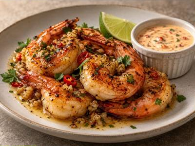

← Back to all recipes
SEAFOOD · DINNER
Spicy Garlic Butter Shrimp with Lime Chili Dip
Seared shrimp in garlicky chile butter served with a creamy lime-chile dipping sauce.
25 minServes 4

Ingredients
- 1½ lb large shrimp
- 4 tbsp butter
- 4 garlic cloves, minced
- 1 red chile, thinly sliced
- 1 tsp smoked paprika
- 1 lime
- 2 tbsp chopped cilantro
- ½ cup mayonnaise or Greek yogurt
- 1 tbsp chile sauce
- Salt and pepper
Preparation
- Mix mayonnaise or yogurt with lime juice, chile sauce, and a pinch of salt for the dip.
- Season shrimp with paprika, salt, and pepper.
- Sear shrimp in a hot skillet until nearly cooked; add butter, garlic, and sliced chile.
- Toss until glossy and just cooked through.
- Finish with cilantro and serve with lime wedges and the lime-chile dip.